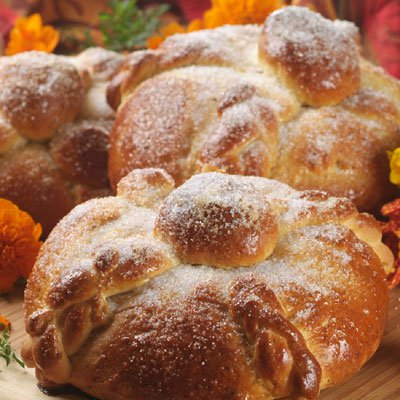

Pan de muerto

Last but not less important pan de muerto this sweetened bread it's a necessary component for the offer to be authentic.
Ingridients
- 4 1/2 a 5 1/2 tazas de harina para todo uso y harina adicional, uso dividido
- 1 taza de azúcar granulada, uso dividido, más un poco más para decoración
- 1 cucharada de semillas de anís
- 1 cucharadita de sal
Steps
- Combina en un tazón para mezclar grande 1 1/2 taza de harina, 1/2 taza de azúcar, las semillas de anís, la sal y la levadura. Calienta la leche evaporada, el agua y la mantequilla a fuego bajo en una cacerola de tamaño mediano hasta que la temperatura de la mezcla alcance de los 115º a los 120º F y se derrita la mantequilla. (Si está demasiado caliente, déjala enfriar un poco antes de agregar los ingredientes secos.) Forma un hueco en el centro de la mezcla de harina; vierte en él la mezcla de leche. Revuelve esto con una batidora eléctrica a velocidad media hasta obtener una consistencia homogénea. Agrega los huevos y 1 1/2 taza de harina; mézclalos bien. Agrega poco a poco (de 1/2 taza en 1/2 taza) de 1 1/2 a 2 1/2 tazas de harina restante, mezclándola bien cada vez que añadas más hasta conseguir que la masa tenga una consistencia homogénea pero que no sea pegajosa. (Es posible que no necesites toda la harina.)
- Coloca la harina en una superficie ligeramente enharinada; amásala de 10 a 15 minutos o hasta que quede moderadamente dura y elástica y que tenga una consistencia homogénea. Puede ser que se necesite más harina para evitar que quede pegajosa. Coloca la masa en un tazón engrasado de tamaño grande; dale vuelta. Tápala con un envoltorio plástico engrasado. Déjala crecer a temperatura ambiente de 60 a 75 minutos o hasta que duplique el tamaño.